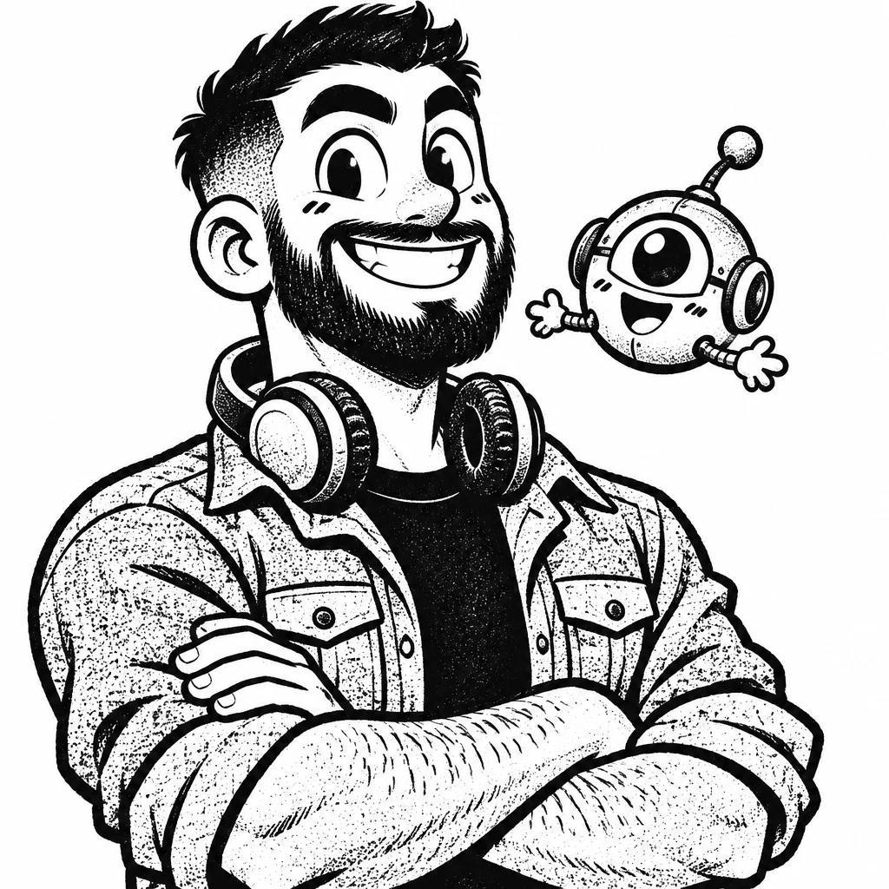
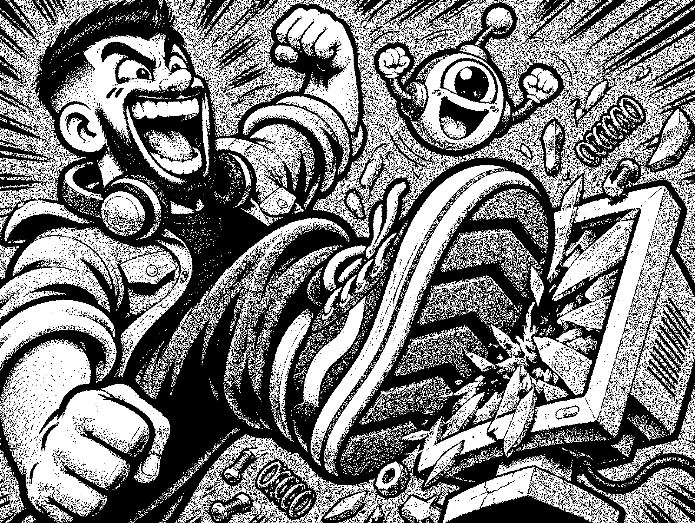
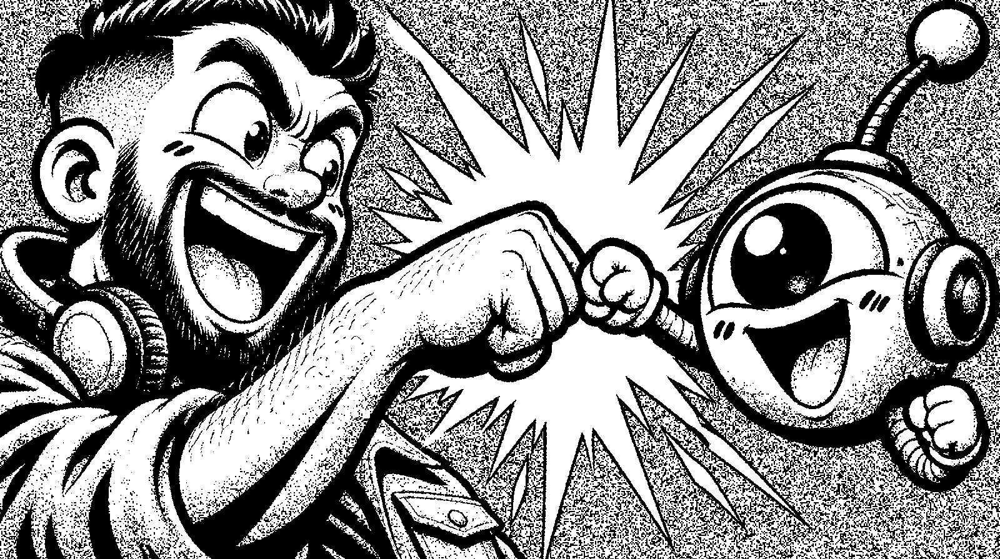

איש למידה, אבל אחר.
אני שחר עזר. מנהל צוות פיתוח למידה ומוביל בינה מלאכותית בחברת Lnet-Gada.
כבר כמה שנים שאני מלווה ארגונים שונים בתהליכי פיתוח תוצרי למידה.
אוהב לשלב מתודולוגיות, חדשנות והומור. ואף פעם לא שוכח להיצמד לטקסונומיה של בלום.

בואו נודה על האמת.

רוב האנשים לא אוהבים ללמוד דברים שמחייבים אותם ללמוד. אם זה לא מגיע מהם, זה בעיקר מעמסה.
מנקודת המוצא המאתגרת הזאת אני יוצא לדרך: פיצוח, מחקר משתמשים, תחקור מומחי תוכן, בניית תוכנית עבודה, פיצוחי מאקרו ומיקרו, כתיבת תוכן, ועד להפקת חוויית הלמידה.
ה־AI הוא חלק מהצוות.

מבצע מחקר מתמיד בעולמות הבינה המלאכותית. מוביל וובינרים וסדנאות AI, ובין היתר מנהל את הקהילות "כלים שלובים" ו־Level Up של Lnet-Gada.
מפיק תוצרי למידה, סרטים, משחקונים ולומדות, ותמיד מנסה להיות צעד אחד לפני כולם. משתדל!
מה אני עושה.
- פיצוח קונספט
- כתיבת תסריטים
- לומדות
- סרטוני הדרכה
- בימוי וימי צילום
- אפיון חוויית משתמש
- הכשרות וקליטת עובדים
- עבודה עם AI
- ניהול צוות פיתוח
מהשטח אל המסך.
- 2022 עד היוםLnet-Gada
מנהל צוות פיתוח למידה- ניהול צוות מפתחות למידה: ניהול אישי וניהול מקצועי.
- הובלת פרויקטים בשיתוף עם משרד החינוך והמזכירות הפדגוגית.
- פיצוח והפקת תוצרי למידה דיגיטליים ללקוחות עסקיים.
- פיצוח והפקת הכשרות עובדים ותהליכי Onboarding.
- כתיבת תסריטי למידה, בימוי וניהול בפועל של ימי צילום.
- 2021 עד 2022Gloww
HR ומנהל משרד- אחראי על רווחת העובדים בחברה וניהול אירועי החברה.
- 2018 עד 2021צה"ל
קצין הדרכה ומפקד פלוגת טירונים- פיקוד על פלוגת טירונים.
- פיתוח מערכי למידה ותיקי יסוד להכשרות מפקדים וקצינים.
- ביצוע ביקורות הדרכה בבסיסי הכשרות.
- איתור צרכים הדרכתיים בשיתוף פעולה עם מפקדים בכירים.
- השכלההאוניברסיטה הפתוחה
John Bryce- תואר ראשון בפכ"מ (פילוסופיה, כלכלה ומדע המדינה), 2022 עד 2026.
- מאפיין חוויית משתמש (UX), 2023.
- מפתח למידה בארגונים ו־HR, 2021.